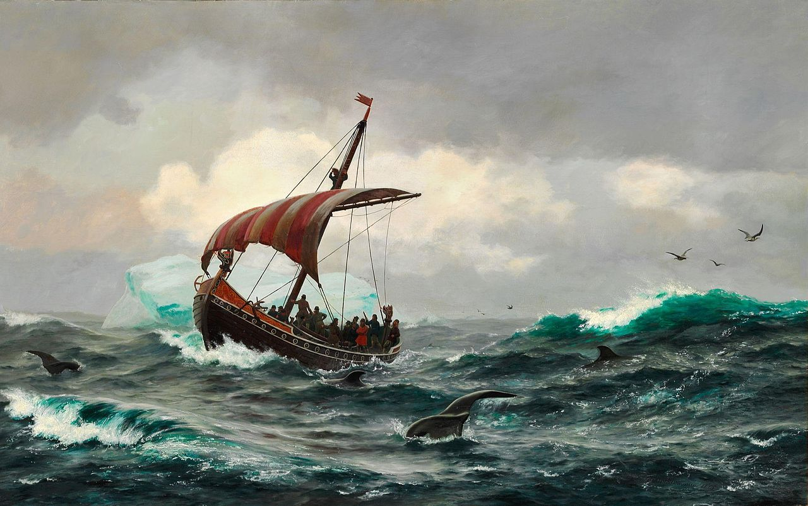
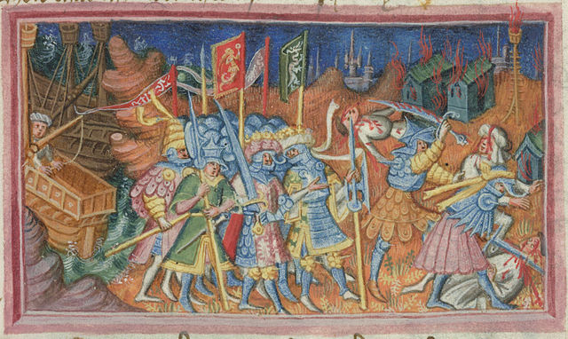
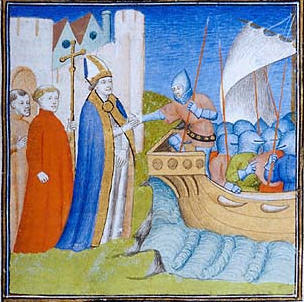
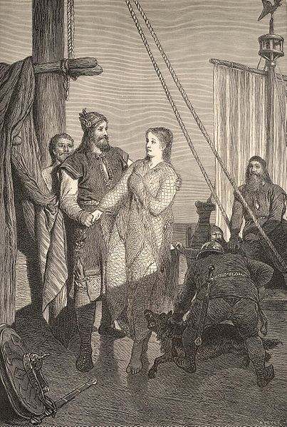

Introduction
Beneath is a list of 6 vikings. Note it is a mere haphazard selection of memorable vikings; many more could be included.
Erik the Red
Erik - the Red - Thorvaldsson was a Norse explorer who lived from the mid 9th to early 10th century. Sagas recount that Erik established the first Viking colony in Greenland. It is known as Eiríksstaðir.
The context of Erik's migration to Greenland was not just mere exploration: he was exiled by the king of Norway and needed to find a place to life.
Erik soon attracted more colonizers - mostly from Iceland. These immigrants are called Skraelingar, and they were well-known for their (international) trade in walrus tusks and seals.
Leifur Erikson
According to Norse tradition, a son always inherits the name of his father. Leifur Erikson is no exception; he was the son of Erik the Red.
While Leifur may not have been the first to rediscover America, he was the first to settle there. He established a colony, called it Vinland (whineland) and attracted much awe from Norsemen far and wide.
Some say that Christopher Columbus rediscovered America. Perhaps it is true if we only count Italians, but he is certainly not the first European to have done so.
Bjarni Herjólfsson

The painting 'Summer on the Greenland coast circa year 1000' by Carl Rasmussen
According to some sagas, Leifur Erikson was not the first one to dicover North America; they say it was Bjarni Herjólfsson.
On a voyage to Greenland, Bjarni got off course in a storm. He ended up seeing land... but that was not Greenland.
He apparently did not explore the newly found land too well, but he inspired later voyages to North America.
Egill Skallagrimson
If you ever visit Iceland, you may notice that one of its most famous sagas is Egil’s saga. That saga is about my forefather: Egill Skallagrímsson. To say the least, Egill was quite a hot-headed guy. From a very young age, he is said to have had… I think we call it anger-management issues today.
Having gone berserk so often, Egill made many enemies in Norway. These eventually brought him in great trouble with the king of Norway - and he then migrated to Iceland.
Among the many poems that Egill wrote are Höfuðlausn and Arinbjarnarkviða.
Ivar the Boneless

The invasion of Greenland by Ivar the Boneless by an anonymous artist.
Ivar - the Boneless - Ragnarsson is best known for his invasion of England in the 9th century CE.
Prior to Ivar's conquest, the vikings only carried out smaller-scaled battles and raids across the English coast.
So, this invasion of England marks the prelude to the ones that were yet to come and it initiated the viking colonization in England.
This Anglo-Viking interaction lasted from Ivar the Boneless' conquest (850s) all the way up until the battle of Hastings (1066) and beyond.
It is unclear where Ivar Ragnarsson's nickname (the Boneless) derives itself from.
It could refer to his physical weakness or his reproductory impotence
Rollo of Normandy

The Norman Rollo lived from c. 860-930 CE (Common Era). Rollo was the first king of Normandy. It is a French region that lays close to Paris. Both this city and the neighboring Seine river were already quite popular raiding locations for the vikings, before Rollo permanently established himself there.
Some historians believe that Rollo is the figure as Hrólf the Walker, a gigantic figure known from some Icelandic sagas.
Ragnar Lodbrock

Lodbrock was a king of Denmark and Sweden. Many stories have been written about his adventures, which include raids in England and mainland Europe. Among these sagas are the Saga of Ragnar Lodbrok, Heimskringla (the world’s circle) and Ragnarssona þáttr (the episode of Ragnar’s sons).
Among the many tales that people know Ragnar for is his raids on raids on France.
In the 860s he even plundered Paris - sailing with his ships all the way down the Seine.
Another mentionable adventure is Ragnar’s series of raids in the Mediterranean (from 859-861).
Ragnar Lodbrock’s descendants include well-known vikings too.
Among them are Björn Ironside and Ivar the Boneless.